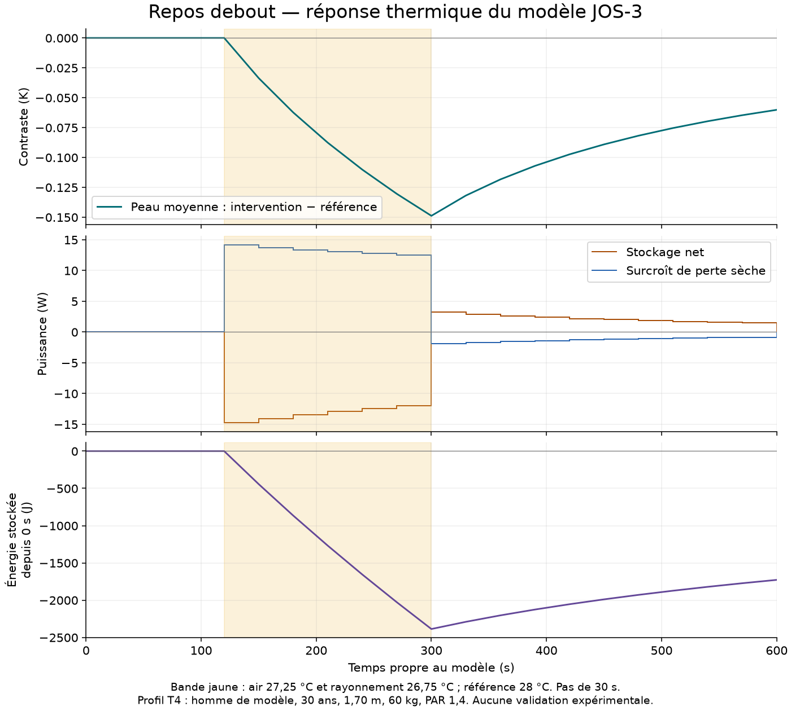

Une posture affichée ne prouve pas un équilibre physiologique du corps entier.
Vérification du périmètre T4…
État thermique en attente de vérification.
Le scénario T4 représente un profil masculin de modèle : 30 ans, 1,70 m, 60 kg, debout, PAR 1,4. Air et rayonnement à 28 °C, humidité 40 %, vitesse d’air 0,2 m/s, vêtement 0 clo. Ce profil ne décrit pas le participant d’une expérience.
Le sang central est un compartiment du modèle, pas une mesure rectale. La diminution des quatre perturbations testées à six heures ne transforme pas l’échec à une heure en réussite et ne prouve pas une stabilité globale.
Voir les critères, résultats et limites thermiques| Élément | Portée actuelle | Preuves |
|---|---|---|
| Posture debout | Référence géométrique. Équilibre mécanique individuel et attaches inter-atlas non reçus. | Anatomie et contexte |
| Fond cardiaque et respiratoire | Relations et mesures consultables ; aucun état de repos cardiorespiratoire global couplé reçu. | Protocole humain |
| Lumière et pupille | Mesures humaines et contrastes statistiques séparés. Aucun état rétinien ou neuronal reconstruit comme fond physiologique. | Mesures pupillaires |
| Émotions et EMDR | Dossiers documentaires. Aucun état chimique universel ni bénéfice individuel déduit. | Protocole EEG |
| Temps et interactions | Secondes propres aux calculs et enregistrements ; ticks P2 synthétiques séparés. Aucun temps physiologique commun ni échange quantitatif inter-organes qualifié. | Lectures et noyau P2 |
| Températures dans l’avatar | Compartiments thermiques non recalés aux surfaces anatomiques. Aucune écriture des résultats dans le corps affiché. | Calcul thermique indépendant |
Déclarer les variables de chaque module, les échanges, leurs unités et horloges, les conditions de fond et les tolérances. Vérifier les bilans et la stabilité sur ce périmètre ; évaluer séparément les observations humaines. Les états manquants restent non renseignés.
Cette page consulte les résultats existants ; elle ne lance aucun solveur et ne modifie pas la scène.
Le métabolisme produit de la chaleur ; la respiration, l’évaporation et les échanges secs en retirent. Le solde change les températures des compartiments. Les transferts internes redistribuent la chaleur et leur somme est nulle.
Référence : air et rayonnement à 28 °C. Intervention physique : air 27,25 °C et rayonnement 26,75 °C de 120 s inclus à 300 s exclu, puis retour à 28 °C. Même état initial T4 et mêmes paramètres. Aucun résultat ne pilote l’avatar.

Vérification des échanges…
| Puissance (W) | Référence | Intervention |
|---|
Intervention sélectionnée. Les 17 régions et le sang central (CB) gardent leurs identités JOS-3 ; aucune correspondance aux mailles de l’avatar n’est déduite. Un transfert interne positif apporte de la chaleur à la région. Les pertes peuvent être signées.
| Région native | Compartiments | Production W | Apport interne W | Pertes W | Stockage W |
|---|
Températures en °C ; puissances en W. Référence et intervention partagent le même instant de modèle. Les apports internes redistribuent la chaleur ; ils ne représentent pas des nerfs ou des connexions anatomiques observées.
| Identité du compartiment | Référence °C | Intervention °C | Production W | Apport interne W | Pertes W | Stockage W |
|---|
L’échange sec utilise la température en fin de pas, cohérente avec le solveur implicite. La sortie SHLsk originale utilise celle du début de pas : elle est conservée dans le fichier source, mais sa somme directe ne ferme pas exactement le bilan discret pendant une transition. L’air et le rayonnement sont combinés dans cet échange ; leur partage n’est pas reconstitué.
Profil et conditions : ceux du point fixe T4 décrit ci-dessus. Temps propre au modèle ; localisations régionales natives, sans recalage HRA. Le débit cardiaque du modèle n’est pas utilisé comme validation d’un état cardiorespiratoire commun.
Source : JOS-3 0.5.0, commit 3c74ee2, licence MIT ; publication de référence. Recette numérique distincte des observations humaines. L’échec de contraction à une heure reste ouvert.